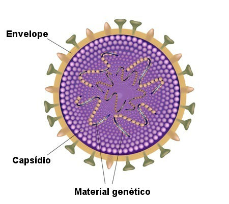
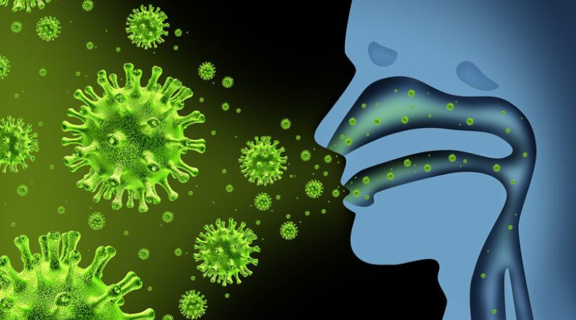

O que são vírus?
Os vírus são seres acelulares, portanto não possuem metabolismo próprio, por conta dessa infeliz característica eles não podem se multiplicar, logo eles não são considerados seres-vivos. Mas algo interesante é que eles possuem um material genético que nos vírus estar presente no interior de uma cápsula de proteinas conhecida como capsídio. Vamos entender mais sobre essa estrutura
Estrutura dos vírus
Como foi citado, os vírus tem o capsídio que é composta por proteínas, e essas proteínas são chamadas de capsômeros. Alguns vírus quando saem das células, para continuar infecctando outras, acabam levando consigo um envelope, que nada mais é que um resquício da membrâna plasmática das células. Temos vírus que tem como o material genético o DNA e o RNA ou amobos, que é chamado de citomegalovírus. Quanto aos vírus que tem o RNA como o vírus da gripe, sofre bastante mutação, pois as enzimas responsáveis por replicar esse material genético comete muitos erros, fazendo com que a mutação ocorra. No envelope temos a glicoproteina tirada das células, glicoproteinas também ocorre em vírus não envelopado. Junto a glicoproteinas temos as enzimas, como o H1N1 por exemplo o H representa a Hemaglutinina e o N é a Neuraminidase.
Doenças causadas por vírus
Existem diversas doenças causadas por vírus, dentre elas podemos citar a gripe, que é um vírus de RNA e sofre muitas mutações ao longo dos anos:
Na historia aconteçeu pandemias de gripe como a gripe espanhola, H1N1 e o atual coronavírus. Essas pandemias mataram milhares de pessoas, porem graças as vacinas foi reduzido o número de mortes causada por essas doenças. Também tem o famoso HIV que é um retrovírus. Para que esse vírus se multiplique é usado uma enzima que faz com que o RNA se torne o DNA das células, essa enzima é chamada de transcriptase reversa. Há também a arbovirose doenças transmitidas pelos mosquitos como a: Dengue, Zika e Chikungunya. Que são comums em ambientes urbanos.
Bom é isso esse foi o meu artigo símples sobre os vírus.